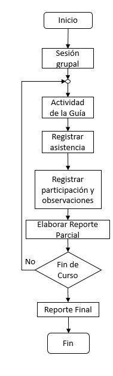

El Comité Académico Institucional estableció mediante un documento rector (ITSM, 2013), un programa general de Tutorías grupales con la finalidad de homologar la práctica de las mismas con los Tutores y sus grupos, cuyo objetivo es de carácter formativo, en donde se apoya al estudiante en el desarrollo de una metodología de estudio y trabajo apropiado para las exigencias de su carrera, así como estimular el conocimiento y aceptación de sí mismo, la construcción de valores, actitudes y hábitos positivos que favorezcan su trabajo escolar y su formación integral. Se estableció un calendario de temáticas que el Tutor abordará en cada una de las sesiones grupales, mismas que se llevan a cabo de manera semanal en una hora-clase por grupo tutelado.
Para instrumentar estas acciones, el comité de Tutorías ha desarrollado una Guía para el Tutor que incluye el contenido por sesión grupal que deberá desarrollar el Tutor a lo largo del semestre. Dicha guía contiene los recursos didácticos y actividades a desarrollar. En la Guía del Tutor se encuentra toda la información que se requiere para desarrollar las actividades Tutoriales grupales de los 8 primeros semestres de los Programas Educativos que se ofertan en el Instituto. El noveno semestre, cuando el estudiante desarrolla su residencia profesional, el asesor interno funge como Tutor y le da seguimiento a las actividades propias de su proyecto.
Figura 4.Proceso de Tutoría Grupal.